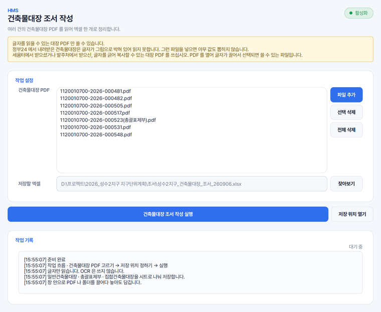

보상 · 감정평가용 건축물 조서
사업 구역 안 건물의 대장 수십, 수백 건을 물건조서에 옮겨야 할 때 씁니다. 눈으로 옮겨 적을 때 생기기 쉬운 줄 건너뛰기나 숫자 잘못 옮기기를 덜 수 있습니다.
HMS 건축물대장은 PDF를 한 건씩 열어 엑셀에 옮겨 적던 일을 대신하는 프로그램입니다. 파일을 목록에 담고 실행하면 대장 한 건의 기본 정보와 층별 현황이 한 줄로 정리됩니다.
글자를 끌어서 선택할 수 있는 대장 PDF를 넣습니다. 파일이나 폴더를 창 안으로 끌어다 놓으셔도 되고, 개수 제한은 없습니다.
일반건축물대장 · 총괄표제부 · 집합건축물대장이 서로 다른 시트에 담기고, 읽지 못한 대장은 이유가 함께 적힙니다.
사업 구역 안 건물의 대장 수십, 수백 건을 물건조서에 옮겨야 할 때 씁니다. 눈으로 옮겨 적을 때 생기기 쉬운 줄 건너뛰기나 숫자 잘못 옮기기를 덜 수 있습니다.
발주처에서 받는 건축물대장 명부에는 층별 용도나 면적이 대개 빠져 있습니다. 층마다 구분 · 층 · 구조 · 용도 · 면적이 한 줄 안에 이어 붙어, 세부 검토에 바로 쓰실 수 있습니다.
일반건축물대장과 집합건축물대장 시트에는 층별 현황에서 계산한 근린생활시설 연면적과 비율이 함께 들어갑니다. 위반건축물 여부와 허가일 · 착공일 · 사용승인일도 칸으로 나와 걸러 보기 쉽습니다.
토지대장이나 도면 PDF가 섞여 있어도 건축물대장이 아니라고 알아본 파일은 건너뛰고 그 수를 따로 알려 드립니다. 여러 건물의 대장을 한 파일로 묶은 것은 건물마다 한 줄씩 나눠 담습니다.
[파일 추가]로 고르거나 파일 · 폴더를 창 안으로 끌어다 놓습니다. 같은 파일은 어느 방법으로 담아도 한 번만 들어갑니다.
입력 파일 옆으로 저장 위치가 자동으로 잡히며, [찾아보기]로 바꾸실 수 있습니다.
어떤 대장이 어떤 종류로 읽혔는지 작업 기록에 차례로 보입니다.
끝나면 몇 건을 정리했고 몇 건이 실패했는지 알려 드리며, 실패한 대장은 상태 · 오류메모 칸에 이유가 남습니다.
HMS Building Register Organizer converts Korean building register PDFs, such as those downloaded from Seumteo, into one Excel workbook in a single batch, extracting the basic data and the floor-by-floor details of each building. It reads only PDFs whose text can be selected. It runs on Windows, and its screens are in Korean.
가상의 사업지(성수2지구 지구단위계획) 자료를 넣어 찍은 화면입니다.

네. 넣는 개수에 제한이 없어, 폴더째 끌어다 놓으시면 대장 수백 건도 한 번 실행으로 일괄 정리됩니다.
읽지 못합니다. 정부24에서 발급되는 대장은 글자가 이미지로 저장되어 있기 때문입니다. 파일을 열어 마우스로 글자를 끌어 보시고, 글자가 선택되어 복사되면 쓰실 수 있습니다.
대지위치 · 지번 · 대지면적 · 건축면적 · 연면적 · 건폐율 · 용적률 · 층수 · 주구조 · 주용도 같은 기본 정보가 대장 한 건에 한 줄로 담깁니다. 층별 현황은 같은 줄 오른쪽에 현황1, 현황2 순서로 이어 붙습니다.
들어가지 않습니다. 소유자 현황은 저장하지 않고, 건물의 기본 정보와 층별 현황을 정리하는 데 맞춰 두었습니다.
아닙니다. 대장을 읽어 값을 뽑고 엑셀을 만드는 일은 모두 쓰시는 PC 안에서 이루어집니다. 다만 읽지 못한 대장이 있으면, 고치는 데 쓰도록 그 파일 이름과 까닭이 HMS 에 전해집니다.
솔루션을 하나씩 받지 않습니다. Solution Center 를 한 번 설치하면 그 안에서 골라 설치합니다.
파이썬 같은 실행환경까지 함께 들어 있어, 쓰시는 컴퓨터에 따로 준비하실 것이 없습니다.
소속은 회사명 · 학교명 · 기관명을 정확히 적어 주셔야 승인됩니다.
내려받기부터 설치까지 한 번에 끝납니다. 새 버전이 나오면 카드가 알려 줍니다.
쓰시다가 막히면 화면을 캡처해 카카오톡 오픈채팅이나 메일로 보내 주세요. 오류 창이 떴다면 그 창까지 함께 담아 주시면 가장 빠릅니다. 문의하는 곳은 홈페이지 문의 칸에 모아 두었습니다.
모두 같은 Solution Center 안에서 골라 설치합니다.